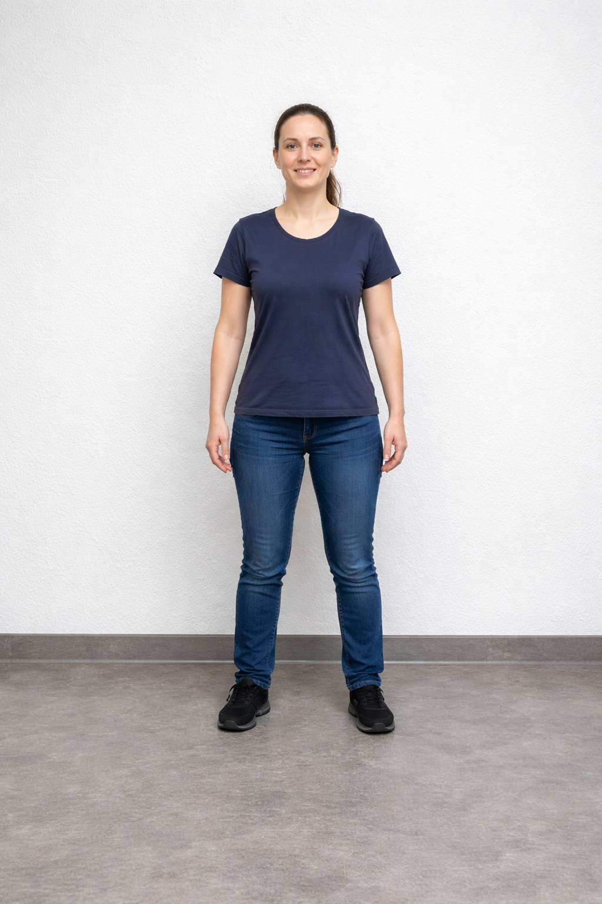

Arbejdsstillinger
Vælg rigtigt eller forkert
På ordkortene nedenfor kan du klikke på overskriften eller billedet på et kort: så bliver navnet på ordkortet læst op.
Vælg for hvert kort om udsagnet er rigtigt eller forkert, og klik på Tjek svar. Længere nede er to små videoopgaver: én om arbejdsstilling og én om mopning.
Ordkort
Belaste kroppen
Du belaster kroppen, når du arbejder med bøjet ryg.

Neutral arbejdsstilling
I en neutral arbejdsstilling er kroppen i balance.
Vægtoverføring
Vægtoverføring betyder, at du står stille og ikke bevæger kroppen.
Arbejdsstilling
Det er en god arbejdsstilling at arbejde med strakte arme langt fra kroppen.
Overbelastning
Overbelastning kan give smerter i kroppen.
Ergonomi
Ergonomi betyder, at du skal arbejde hurtigt uden at tænke på kroppen.
Videør om arbejdsstilling
Hvilken arbejdsstilling er korrekt?
Se de to små film. For hver video skal du vælge om den viser en rigtig eller forkert arbejdsstilling. Klik derefter på Tjek svar.
Hvilken mopning er korrekt?
Se de to små film om mopning. For hver video skal du vælge om den viser en rigtig eller forkert mopning. Klik derefter på Tjek svar.